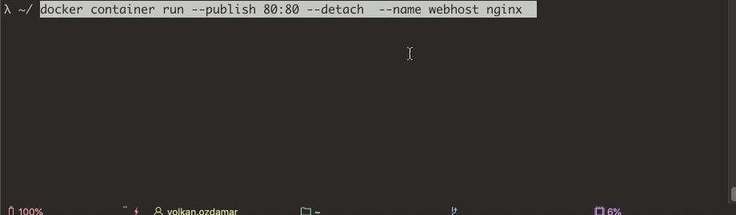
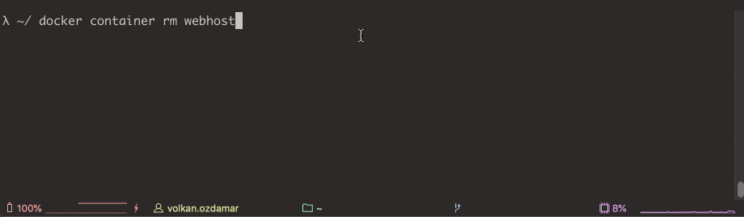

Before this, I explained here, what is Docker, what is a container and why we are using it. I skip to installation because docker installation has differences in each operating system. You can follow the official installation document from here
INFO Commands
When you did to installation successfully, we can start to use docker. Open terminal or PowerShell and write these lines.
docker version
This command will give you information about the version of your system and docker engine.
Client: Docker Engine - Community
Version: 19.03.8
API version: 1.40
Go version: go1.12.17
Git commit: afacb8b
Built: Wed Mar 11 01:21:11 2020
OS/Arch: darwin/amd64
Experimental: false
Server: Docker Engine - Community
Engine:
Version: 19.03.8
API version: 1.40 (minimum version 1.12)
Go version: go1.12.17
Git commit: afacb8b
Built: Wed Mar 11 01:29:16 2020
OS/Arch: linux/amd64
Experimental: false
containerd:
Version: v1.2.13
GitCommit: 7ad184331fa3e55e52b890ea95e65ba581ae3429
runc:
Version: 1.0.0-rc10
GitCommit: dc9208a3303feef5b3839f4323d9beb36df0a9dd
docker-init:
Version: 0.18.0
GitCommit: fec3683
Another info command is "docker info" shows you informations about configuration values for engine
docker info
But what about if we write only “docker”.When we type to terminal or PowerShell only “docker” it prints to us an informative explanation about docker management commands, commands and their options.
Simply we manage docker image and container like that
docker <command> <sub-command>
For instance, if we want to run a container we need to write
docker container run
also, we can use this without command, but this is naming as an old way now.
docker run
Container Management Commands
Container management command for creation, deletion start and stop for container.To explain that i choose to create nginx container.
docker container run --publish 80:80 --detach --name webhost nginx
** --detach or -d option runs container in the background.

With this command Docker doing
- Pulling the image of nginx from docker hub if not exist locally
- Creates new container based of that image
- Gives a virtual ip on a private network inside docker engine
- Reserve port 80 from the host machine and forwards to port 80 in container
- Starts container
After container created , you can list all working containers , you should see your container as up and running
docker container ls // or docker ps (old way)
with -a flag you can list stopped container also.
docker container ls -a
If you want to learn details of your container configs , inspect command prints it as json
docker container inspect webhost
If we want to stop our container just need to write a command below with our container name.Remember , our container name was webhost.(When you don't give a name a container , docker gives a random name for it.BTW, you can also use first 3 digits of your container id instead of name)
docker container stop webhost
To re-run stopped container we change stop as start .
docker container start webhost

And lastly when we want to remove docker container , we use to 'rm' command.Before remove a container , you need to stop it.Docker gives a warning to prevent deletion of working containers like above.
docker container rm webhost
Logs and Tasks Management
If we used --detach and -d , still we can reach logs of the running container
docker container logs webhost
and for the process list in one container.
docker container top <containername>
And todays last command coming for to reach performance stats for all containers
docker container stats